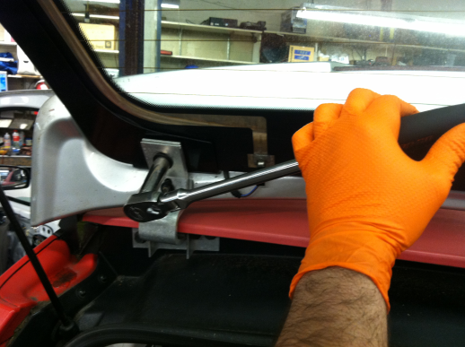

I’m not surprised anymore when a Think arrives at the shop and the rear liftgate is released. Often the latch position switch (that should turn on the “Door Ajar” light on the center console) is not adjusted correctly. And I’ve seen plenty of liftgate latches slowly get further and further out of adjustment until you really have to slam it to get it to shut. So here’s what you can do about it:The first step is to adjust the striker-side of the latch, the part that is mounted on the glass liftgate itself. You’ll need a 4mm hex bit/Allen wrench and a 10mm wrench or socket/ratchet.
{kind=link}
Here’s the striker removed from liftgate so you can see how the mounting holes are slotted. (There’s no need for you to remove it for any reason that I can think of.)
{kind=link}
The striker has a tendency to get pushed back each time the liftgate is closed unless the mounting nuts and bolts are quite tight. (I did not see a torque spec, but I would go with the VW standard of “guttenteit.”) So loosen the bolts with the 4mm hex while holding the 10mm Nyloc nuts. (Nyloc nuts are a type of locking nut– it won’t loosen and then spin freely like a normal nut and bolt; it will have quite a lot of turning resistance until the nut is almost completely off. But you’re just loosening it a little bit in this case.) You should be able to move the striker forward and back in it’s mounting bracket. Make sure it is pulled all the way forward (with respect to its orientation when the liftgate is closed) and then make those mounting bolts and nuts guttenteit.
If adjustment of the striker does not make your liftgate close and latch shut easily, the next step is to try adjusting the liftgate itself. You may want to try this, too, if you notice small indentations on the weatherstrip on either side of the latch like in the photo below.
{kind=link}
The holes on the hinge where the glass liftgate bolts on have quite a bit of room for adjustment (aka slop). You’ll need a 13mm wrench or socket/ratchet. The torque specified in the service manual (Chapter B – Body and Frame, page 14) is 25 Nm, which is not a whole lot. I probably exceed this torque by a significant margin when I adjust a liftgate, but please be careful– you can probably find replacement nuts and bolts for the striker, but if you strip a stud on the liftgate you might be out of luck.
If you’re a real nerd you might use a scribe to mark where the liftgate is initially positioned. Loosen the Nyloc nut on one side at time while supporting the glass liftgate, re-position the glass liftgate so it will be higher up when it’s in the closed position, and then tighten the nut.

You can see in the photo below that the initial position that I scratched on the hinge is about 1/4″ from the final position.
{kind=link}
Still having trouble getting your rear hatch to close and latch shut? We’ve been through the most promising options, but there’s one last thing to check: the position of the latching mechanism on the car (rather than on the part mounted on the glass). Remove the trim piece that covers the latch by pulling the weatherstrip off (avoid touching the gray sticky stuff) and removing the seven screws using a Torx 20 bit. Loosen the two bolts that secure the latch mechanism to the bracket using a 10mm wrench– there’s probably not enough room to get a socket and ratchet in there. Adjust the latch as far up and aft as it will go (but I find that they are usually already adjusted to that position).
{kind=link}
While you’ve got the trim piece removed there are a few things you might also want to adjust.
The latch release actuator is a small motor in a plastic case, and there have been a few occasions when the case has split open and it screeches like a banshee when you press the rear hatch release button. If you loosen the two mounting screws it’s possible to finagle a few zip-ties around the actuator to prevent it popping apart. (I haven’t installed zip-ties around the actuator in the photo below.)
{kind=link}
The most cantankerous part of this set-up, for me is the latch position switch. I’m out of time for now, but I’ll summarize it later.
When re-installing the trim piece, please do not over-tighten the screws because they easily strip out the plastic inserts they thread into.